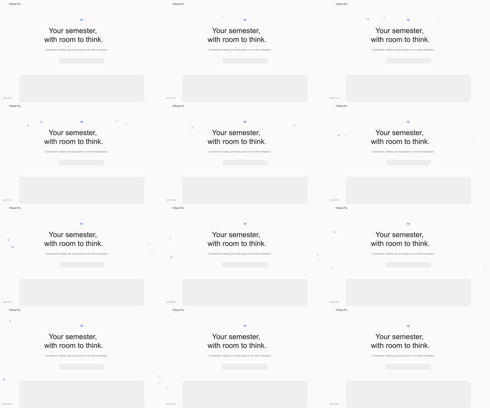
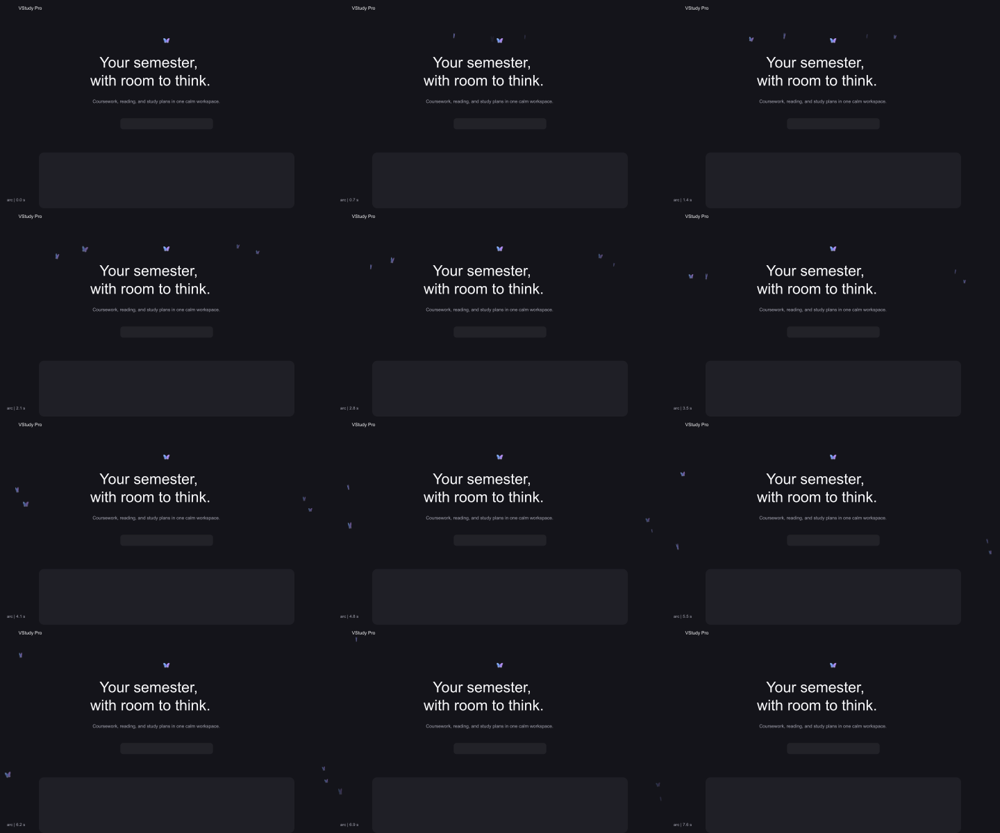
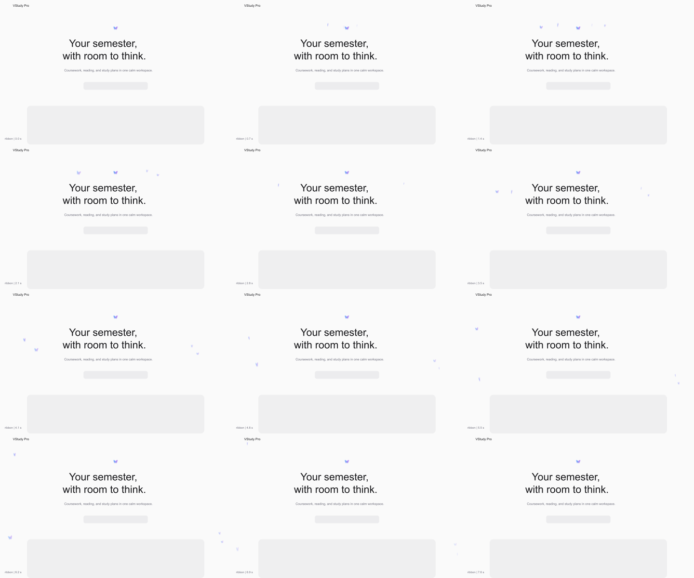
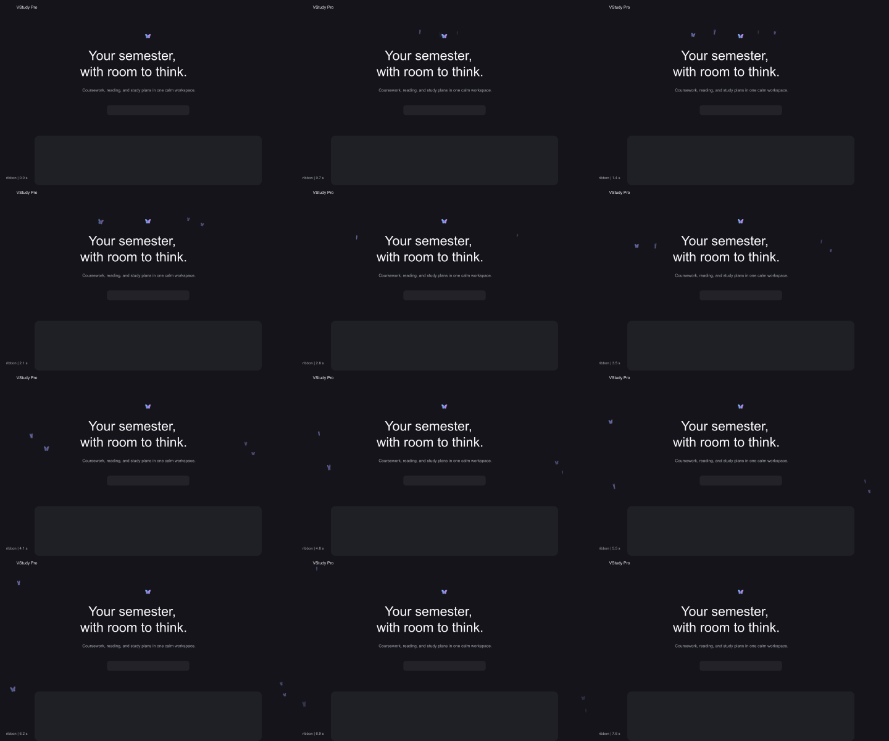
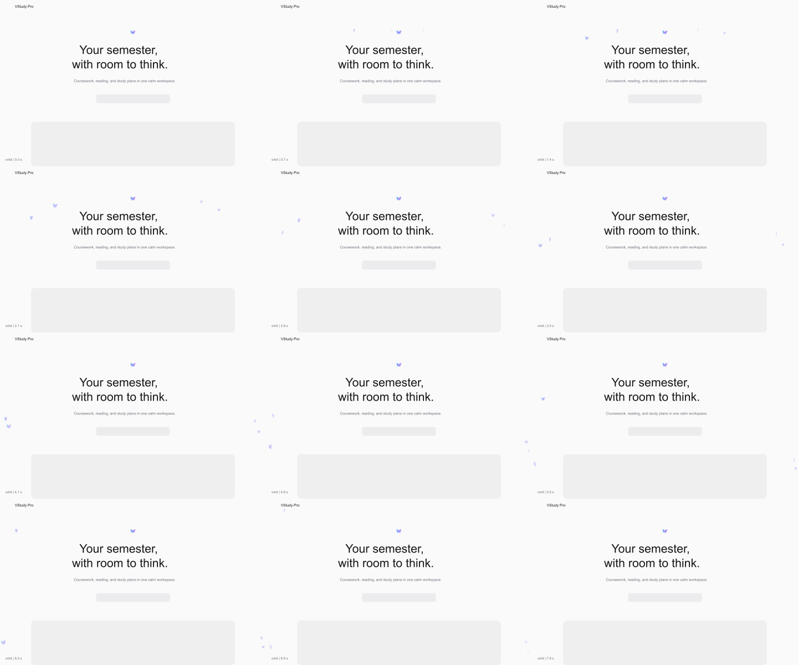
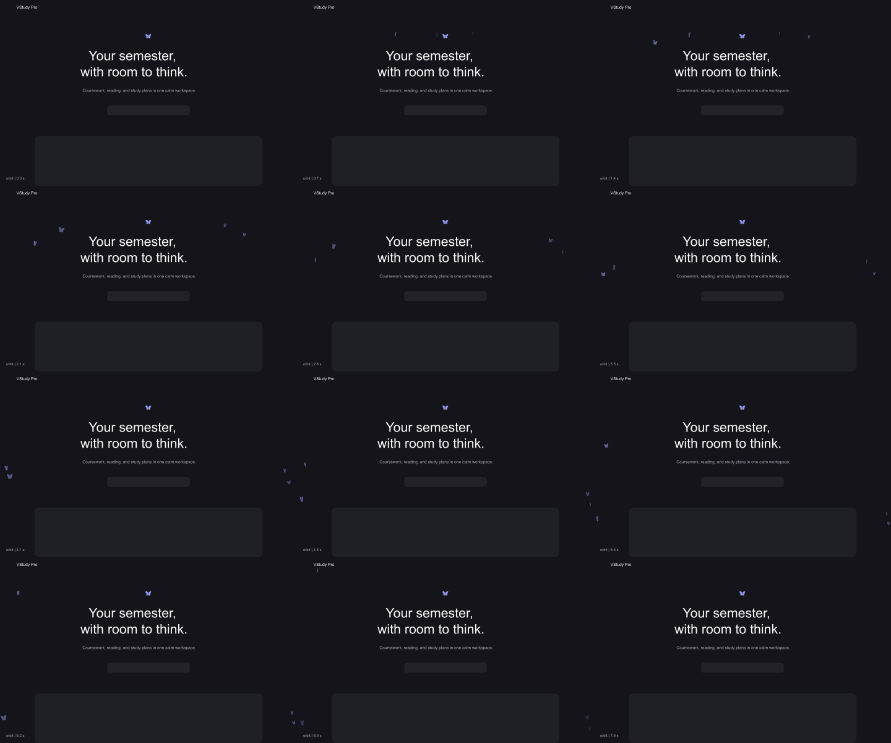

The wide arc separates the butterflies above the headline, then carries them around the product edges. Twelve deterministic prototype frames span 7.6 seconds. The shipped page has separate live browser captures.